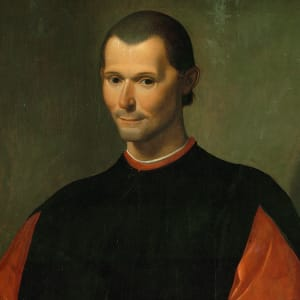

Niccolò Machiavelli
Diplomat and politicus
Niccolò Machiavelli, (born May 3, 1469, Florence [Italy]—died June 21, 1527, Florence), Italian Renaissance political philosopher and statesman, secretary of the Florentine republic, whose most famous work, The Prince (Il Principe), brought him a reputation as an atheist and an immoral cynic.
Early life and political career
From the 13th century onward, Machiavellis family was wealthy and prominent, holding on occasion Florences most important offices. His father, Bernardo, a doctor of laws, was nevertheless among the family is poorest members. Barred from public office in Florence as an insolvent debtor, Bernardo lived frugally, administering his small landed property near the city and supplementing his meagre income from it with earnings from the restricted and almost clandestine exercise of his profession. Bernardo kept a library in which Niccolò must have read, but little is known of Niccolòs education and early life in Florence, at that time a thriving centre of philosophy and a brilliant showcase of the arts. He attended lectures by Marcello Virgilio Adriani, who chaired the Studio Fiorentino. He learned Latin well and probably knew some Greek, and he seems to have acquired the typical humanist education that was expected of officials of the Florentine Chancery. In a letter to a friend in 1498, Machiavelli writes of listening to the sermons of Girolamo Savonarola, a Dominican friar who moved to Florence in 1482 and in the 1490s attracted a party of popular supporters with his thinly veiled accusations against the government, the clergy, and the pope. Although Savonarola, who effectively ruled Florence for several years after 1494, was featured in The Prince (1513) as an example of an “unarmed prophet” who must fail, Machiavelli was impressed with his learning and rhetorical skill. On May 24, 1498, Savonarola was hanged as a heretic and his body burned in the public square. Several days later, emerging from obscurity at the age of 29, Machiavelli became head of the second chancery (cancelleria), a post that placed him in charge of the republic’s foreign affairs in subject territories. How so young a man could be entrusted with so high an office remains a mystery, particularly because Machiavelli apparently never served an apprenticeship in the chancery. He held the post until 1512, having gained the confidence of Piero Soderini (1452–1522), the gonfalonier (chief magistrate) for life in Florence from 1502.